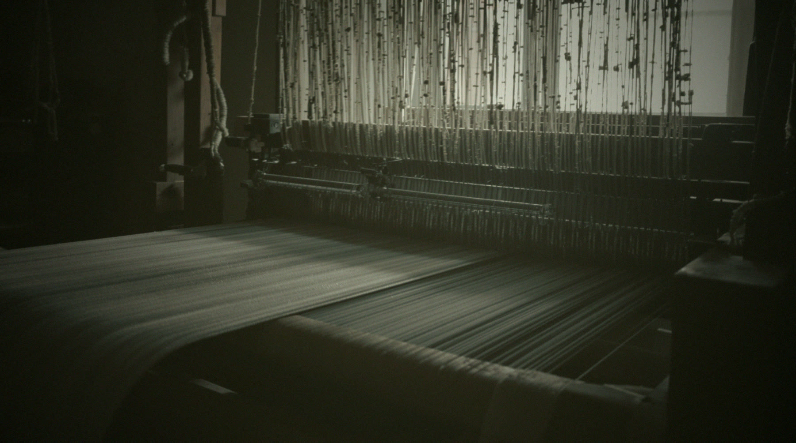

한 벌이 매장에 걸리기까지 누군가의 손이 몇 번 지나갔는지 생각해 봅니다. 실을 고르고, 씻고, 말리고, 다시 꿰맨 손.
tOM은 29년 동안 그 손을 골라 왔습니다. 이번 장(章)은 바래고 해진 것들, 오래 입어야 비로소 완성되는 옷들입니다.
See the chapter →

계절마다 한 번, 새 장(章)과 매장 소식을 보내드립니다.
Subscribe — 카카오 채널 (준비 중)